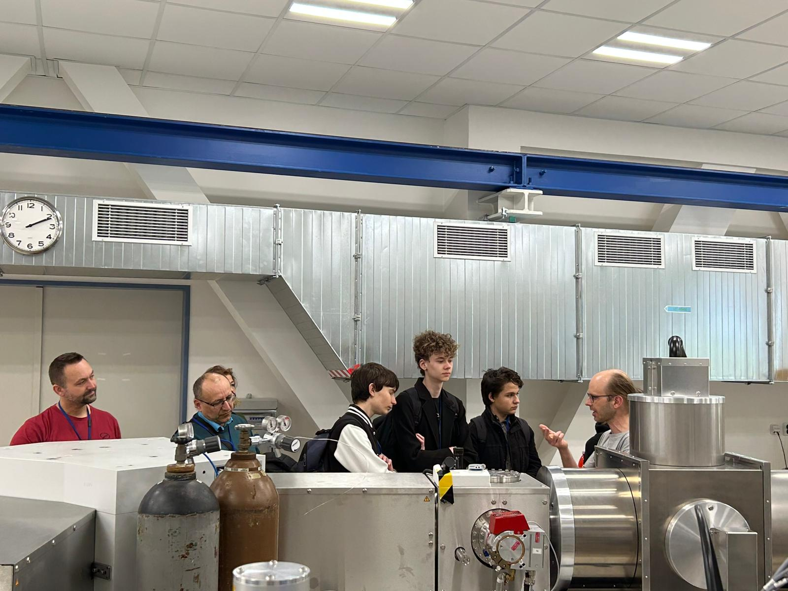

The Velox Project
This is the official page of Project Velox; Project Velox is a project focused on the development of equipment in the field of particle physics.
We are currently in the first phase of the project, which includes purchasing the necessary components and preparing for the first part of the project. On this page, we will regularly update information about our progress.
News
Last purchases
With the start of April, we purchased the final components for the construction of the first phase of the project (see About).
Now we are ready to assemble the first and most complicated part of the accelerator. For now, it appears that we will be able to complete the project on time.
Consultation of the ČVUT personnel
Even though VŠB was sufficient for us for a long time, we made an agreement with the staff at CTU, who have their own experience with particle accelerators. Thanks to this trip to Prague, we uncovered problems with our design, which may potentially prevent a disaster.
